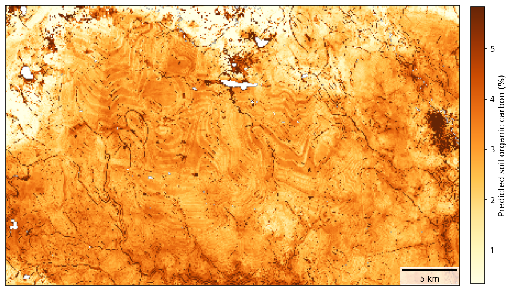
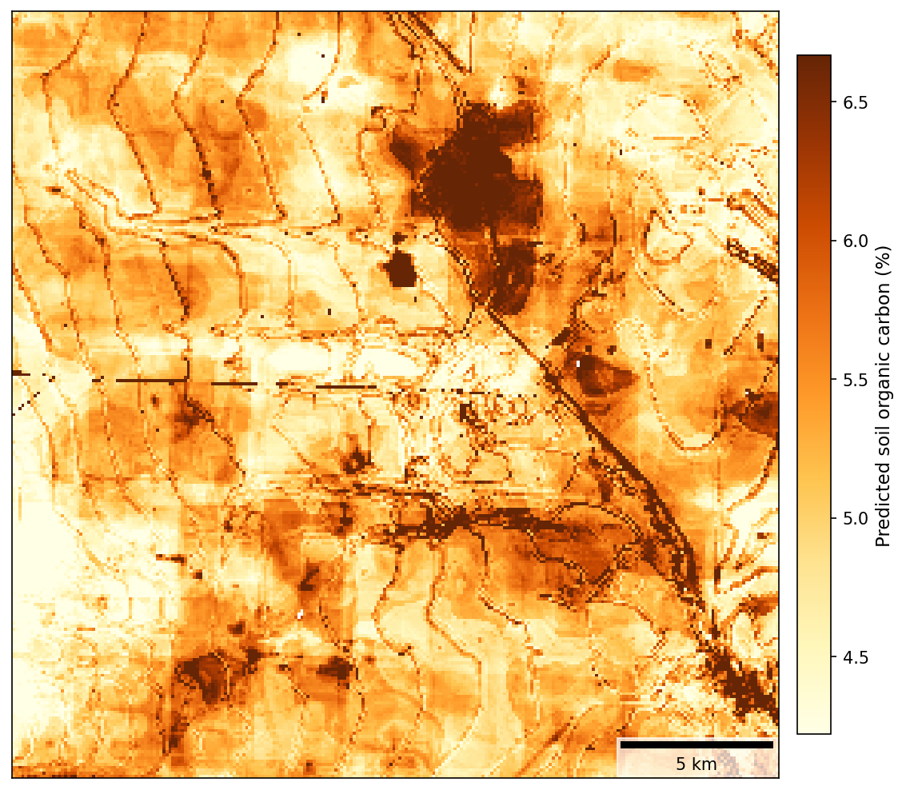
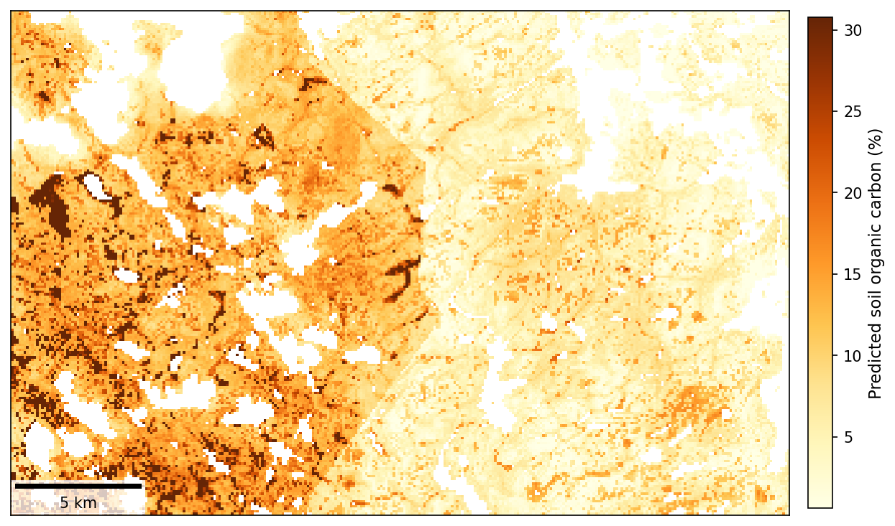

The Soil Landscape Grids of Canada (100 m): A Preliminary Product That Is Not Yet Ready for Use
Soil Landscape Grids of Canada, 100 m soil maps, CanSIS, digital soil mapping, predictive soil mapping, soil organic carbon, Canada soil data, soil map accuracy, soil map validation, out-of-bag error, random forest, soil covariates
In December 2024, the Canadian Soil Information Service (CanSIS) released the Soil Landscape Grids of Canada, a set of freely available, high-resolution (100 m) national maps covering seven soil properties across five depths.
This article assesses the version of the Soil Landscape Grids of Canada available as of the product page’s Date modified: 2026-02-11. CanSIS may revise the product over time, and later versions may differ from what is described here.
A national, openly available soil dataset has been a long-standing goal for the Canadian soil science community, and the ambition behind this product is worth recognizing. Getting it right would be genuinely valuable for carbon accounting, greenhouse gas reporting, land management, and research.
Before going further, I want to be clear about what this post is and is not. Many of the concerns I summarize here are not mine alone, and I do not claim credit for them. They were raised formally by a large, cross-country group of Canadian soil scientists and predictive soil mappers from academia and provincial governments. My goal is to help communicate those concerns to a wider audience, and to add some analysis of my own based on the product’s published documentation and on figures I have rendered directly from the released data.
Since the December 2024 release, the methods have been documented in a peer-reviewed data descriptor (Geng et al., 2025, Scientific Data), which also provides uncertainty layers. That is a welcome and important addition. But reading the documentation carefully supports caution rather than confidence, for the reasons below.
The reported accuracy overstates real-world performance
The data descriptor reports strong accuracy: an out-of-bag coefficient of determination (R-squared) of 0.82 for soil organic carbon at all three topsoil depths, and 0.70 to 0.76 for bulk density, sand, and clay.
The problem is what “out-of-bag” means. Out-of-bag error is an internal estimate produced by a random forest model from its own training data, not an independent test. For soil data it tends to overstate real-world accuracy, for two reasons that both apply here. The training points are spatially clustered, concentrated in the agricultural south and collected largely between 1980 and 2000. Soil properties are spatially autocorrelated, as a result out-of-bag points are frequently very close to training points the model has effectively already seen. Nearby points leak information, and the resulting out-of-bag validation scores reflect performance in densely sampled areas rather than at genuinely independent locations across the country.
The gap between that internal estimate and independent validation is substantial. When the maps were compared against independent provincial soil datasets:
- In the agricultural regions of southern Ontario, validation against roughly 1,500 recent soil samples found essentially no correlation for organic carbon, pH, sand, silt, clay, or cation exchange capacity.
- In southwestern Quebec, a comparison against tens of thousands of samples found little agreement for soil organic carbon, with many mineral soils (which hold well under 10% carbon) predicted to contain far more.
- In Saskatchewan, independent validation reached an R-squared of approximately 0.25 for topsoil carbon, roughly half the accuracy of other published provincial-scale carbon mapping in the same region. The dataset used for validation in this case is from the same time period as the data used to create the Soil Landscape Grids of Canada.
An out-of-bag R-squared of 0.82 set against independent validation ranging from near zero to about 0.25 is the single clearest reason to treat the current accuracy claims with caution.
The artifacts point to a systemic cause: covariate choice
The problems are not limited to accuracy statistics. The maps contain systematic artifacts created due to the environmental covariates used to build them.
Predictive soil mapping works by learning statistical relationships between soil observations and environmental covariates, and then applying those relationships everywhere. The output can only be as good as the covariates it is built on. If a covariate contains an artificial pattern, the model reproduces it in the soil predictions. Two covariate problems are clearly visible in the 0 to 5 cm soil organic carbon results.
Terrain covariates derived from a contour-based elevation model. Many of the covariates (slope, curvature, topographic position, valley depth, topographic wetness index, landform classes, and others) are derived from a national digital elevation model. When a soil map built on those terrain derivatives shows nested, concentric lines like the two examples below, from different regions, it means the elevation model itself carries contour-line interpolation artifacts, a known characteristic of national elevation data interpolated from digitized topographic contours. The terrain derivatives inherit the pattern, and the model recreates it straight into the carbon predictions.


Vector datasets used as covariates and masks. The covariate set also includes polygon (vector) data, such as a national surficial geology map, and the product applies a depth-to-bedrock layer compiled from multiple raster and vector sources. The authors themselves note that this compilation produced abrupt division lines that needed correcting. Hard, straight edges of exactly this kind appear in the output, including the discontinuity along the Manitoba/Ontario border below. Soil does not change character along an administrative or map-sheet boundary, so these edges are covariate or data-compilation artifacts, not real soil variation.

These are not pixel-level inaccuracies to be smoothed over. They are structural, methodological artifacts that trace back to covariate selection and preparation, and they are exactly the kind of issue that consultation with the predictive soil mapping community would catch before release.
The correct resolution depends on the training data
The product is mapped at 100 m. But the training data cannot support that resolution everywhere. The pedon data are clustered and were collected decades ago, so across most of the country the density of real observations behind any given pixel is very low. The historical pedon records also carry location uncertainties of roughly 300 m or more, which means the training points cannot reliably be tied to a 100 m pixel (the mapping resolution) in the first place.
Mapping at a fine resolution over a huge area with sparse, imprecisely located data tends to compress the real variation in soil properties toward the average, so the map can look detailed while representing the landscape poorly. The resolution of a predictive soil map has to be selected carefully based on the properties of the training data: the right resolution follows from the location accuracy and density of the observations, and should be decided on that basis rather than set to match the finest available covariate grid. A product mapped finer than its data can support will look more precise than it actually is.
How this happened
National-scale soil mapping is genuinely hard, and it is nearly impossible to do well without the data and expertise that are spread across the country. In Canada, soil science capacity is decentralized: much of the current soil data and predictive mapping know-how now resides in provincial governments and academia. That community was not engaged to provide feedback or contribute to the development of the Soil Landscape Grids of Canada, and many practitioners only became aware of the product after it was released. That gap in collaboration is the most likely root cause of the issues above, including covariate choices and validation decisions that external review would have flagged immediately.
The key point for anyone considering using it
The independent evaluation of the Soil Landscape Grids of Canada suggests that this product should be viewed as still in development and not ready for carbon accounting, modelling, or use for decision making. Independent validation is weak, the reported accuracy relies on out-of-bag error that overstates performance, systematic artifacts are present, and the product itself is still labelled as under evaluation and review. The authors also note that accuracy is expected to improve as more ground data are added, which is a fair description of a product still in development.
In its current form, the Soil Landscape Grids of Canada is best viewed as a preliminary soil map, released for review and revision with the Canadian soil mapping community. It is not ready to be used as an input for carbon accounting, biogeochemical modelling, or land-management and policy decisions. Using it for those purposes today would risk carrying its errors, and its artifacts, directly into downstream results.
A constructive path forward
None of this diminishes the value of the goal. A reliable national soil data infrastructure is worth building, and CanSIS has an important mandate in that space. A few steps would help this product get there:
- Continue to support the Canadian Soil Data Portal initiative, so that the current, consolidated data required for credible national-scale mapping is actually available to draw on.
- Continue developing the product in collaboration with soil scientists from provincial governments and the academic community, rather than in isolation. For example, the Ontario Ministry of Agriculture, Food and Agribusiness has world-leading predictive soil mapping initiatives and operational processes that could be built on. Extensive research in predictive soil mapping is also taking place at universities across Canada.
- Validate independently and consult before release. Future versions should be tested against independent, spatially representative data (not out-of-bag error alone), with the results and the covariate choices reviewed with Canadian stakeholders before public release.
The expertise needed to make this product world class already exists in Canada. Bringing soil scientists across the country together is the path forward to build a national soil map that people can genuinely rely on, and many in the community would welcome the chance to help build it.
Sources: Geng, X., He, J., Grima, V., Jiang, Y., Tetreau, M., Crittenden, S., Kiley, S., VandenBygaart, A. J., & Vanrobaeys, J. (2025). 100 m soil landscape grids of Canada. Scientific Data, 12, 1178. https://doi.org/10.1038/s41597-025-05460-4. The independent provincial validation results summarized here were compiled by members of the Canadian soil mapping community. All figures were rendered by the author from the released product.